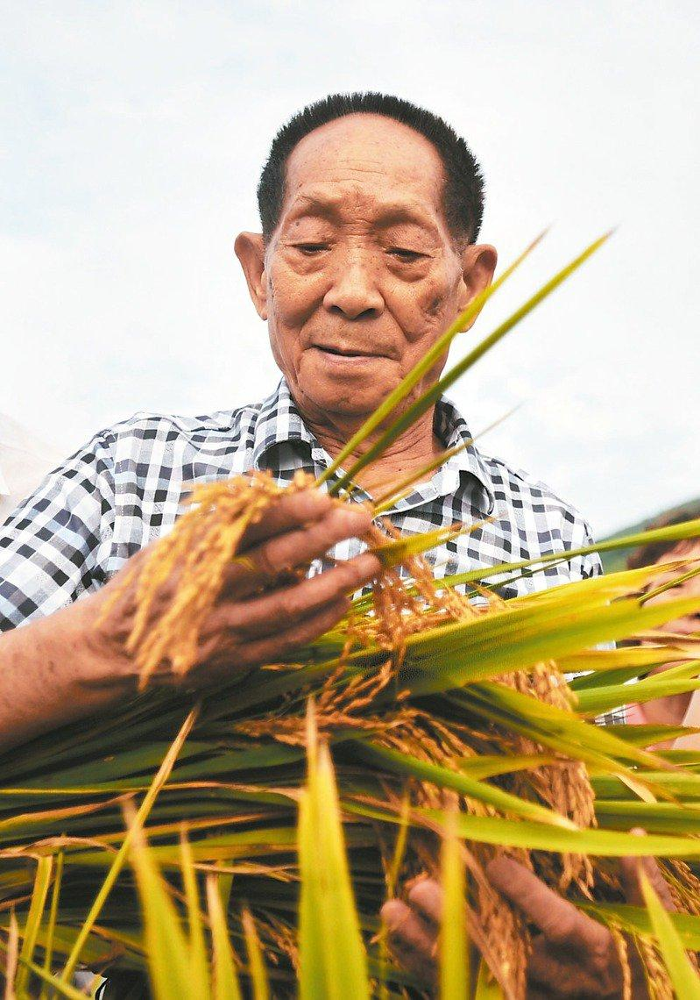
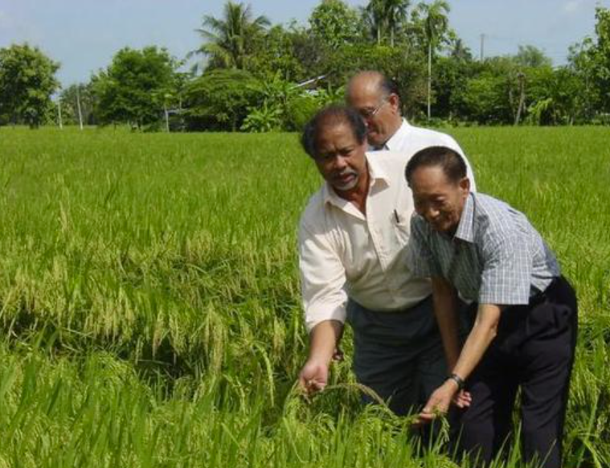
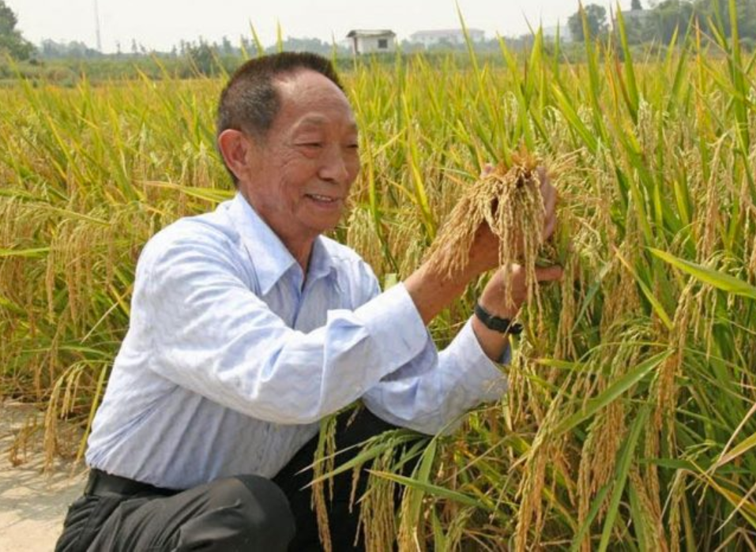
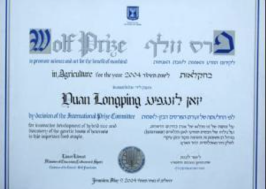

Revolutionizing Global Agriculture
Yuan Longping (September 7, 1930 – May 22, 2021) was a Chinese agronomist, renowned for developing the first hybrid rice varieties in the 1970s. His groundbreaking work has been credited with saving millions of people from hunger and transforming agricultural practices worldwide.
Serving as the director of the China National Hybrid Rice Research and Development Center, Prof. Yuan's innovations increased rice yields by 20-30%, making China self-sufficient in food production and providing a sustainable solution to global food security challenges.
Scientific Legacy Documentary
Prof. Yuan Longping's Remarkable Contributions to World Food Security
About This Documentary
This Bilibili documentary showcases Prof. Yuan Longping's revolutionary work in hybrid rice technology and its profound impact on global agriculture. The video covers his lifelong dedication to agricultural science.
- The scientific breakthrough of three-line hybrid rice system
- Field applications and yield improvements worldwide
- Impact on food security in developing nations
- Legacy and future prospects of hybrid rice technology
Video Source: Bilibili - Memorial video of Prof. Yuan Longping
Requirements: Internet connection required to load video
Device Support: Compatible with all modern devices and browsers
Scientific Journey Timeline
Key milestones in the life and work of Prof. Yuan Longping
Birth in Beijing
Born on September 7, 1930, in Peking Union Medical College Hospital, Beijing.
Agricultural Education
Graduated from Southwest Agricultural College (now Southwest University) in Chongqing.
Discovery of Natural Hybrid Rice
Discovered a natural hybrid rice plant at Anjiang Agricultural School, Hunan Province.
Three-line Hybrid Rice Success
Successfully developed the three-line hybrid rice system, increasing yields by 20%.
State Preeminent Science and Technology Award
Awarded China's highest scientific honor for his contributions to hybrid rice research.
Passing of a Legend
Passed away in Changsha, Hunan, on May 22, 2021, at the age of 90.
Major Scientific Contributions
Revolutionary advancements in agricultural science
Hybrid Rice Technology
Developed the world's first high-yield hybrid rice varieties using three-line breeding system, revolutionizing rice cultivation globally.
Super Hybrid Rice
Pioneered the "Super Hybrid Rice" program, achieving yields exceeding 15 tons per hectare through continuous genetic improvement.
Global Dissemination
Successfully introduced hybrid rice technology to over 60 countries, significantly improving food security in Asia, Africa, and Latin America.
Scientific Training
Trained thousands of agricultural scientists and technicians worldwide, establishing a global network of hybrid rice expertise.
Visual Legacy
Moments from a life dedicated to science and humanity


